UBC Formula Electric is a student design team where we build a formula electric race car and compete in FSAE.
{kind=link}
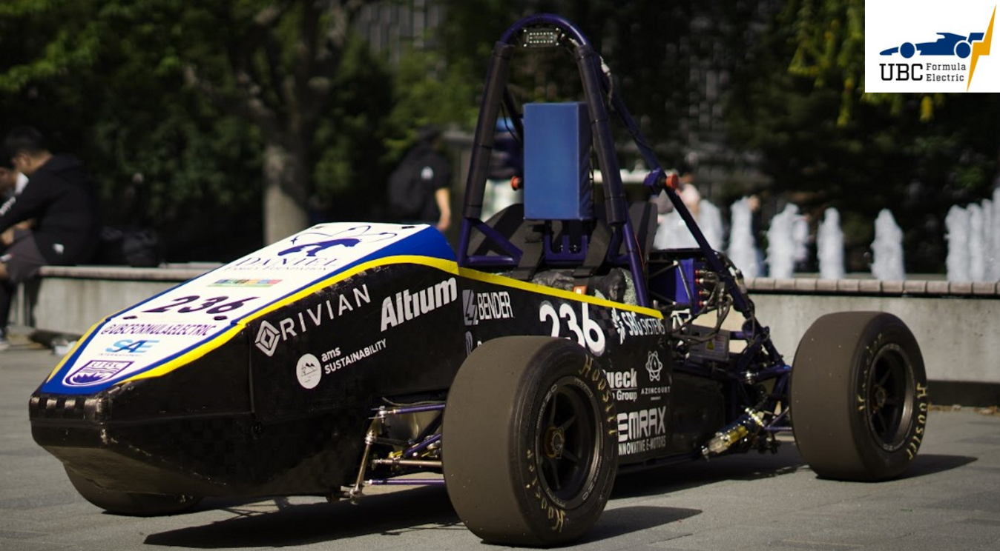
I am on the Hardware Sub-team and my tasks are mainly PCB design and Circuit debugging:
PCB Designed
Monolithic Module (4 Layers):
This PCB is used for:
- The balancing of the batteries in the accumulator pack
- Monitoring the temperature and voltage levels of the batteries in the battery pack
Assembled board:
{kind=link}
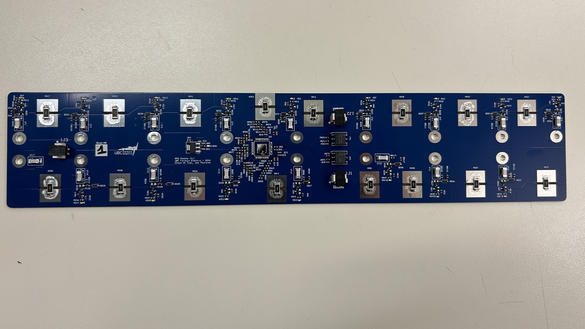
3D top view
{kind=link}
- Layer 1
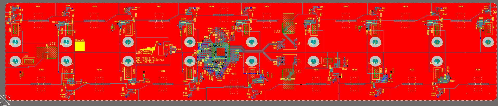
{kind=link}
- Layer 1 (shelved polygons)
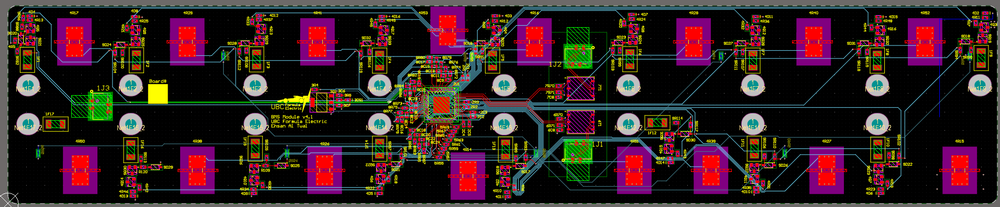
{kind=link}
- Layer 2
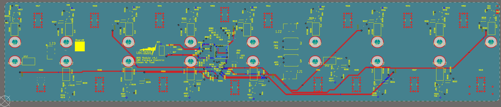
{kind=link}
- Layer 3
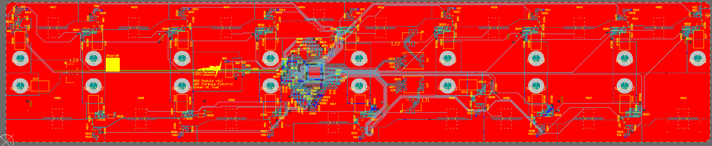
{kind=link}
- Layer 4
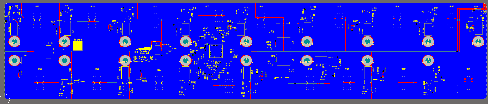
{kind=link}
- I engineered a test suite to simulate a segment in the battery pack with 16 Li-ion cells for precise testing of the BMS Monolithic Module and executed effective PCB debugging to ensure optimal functionality.
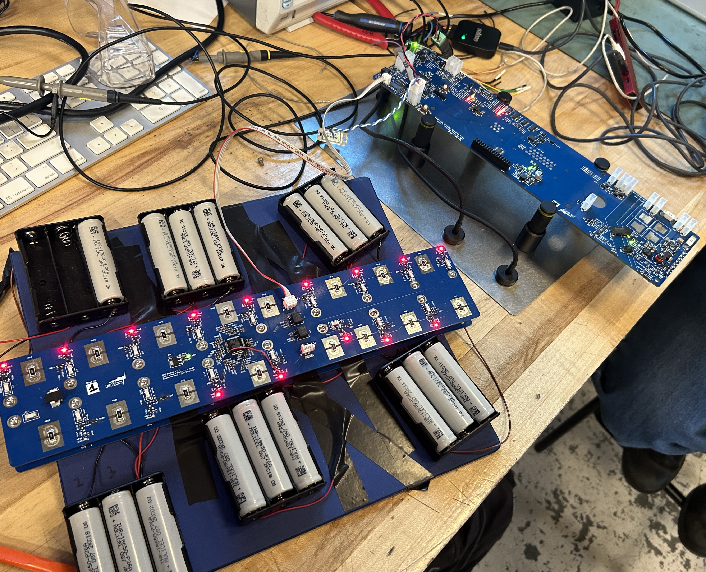
{kind=link}
The module would be placed on top of a battery inside the accumulator pack, and screws would be drilled through the metal oval holes and into the battery to establish an electrical connection between the cells and the PCB which is used to balance the cells and monitor their voltage and temperature levels.
This board uses an LTC6813 chip with isoSPI communication to send information to the microprocessor on the BMS board.
Schematics :
{kind=link}
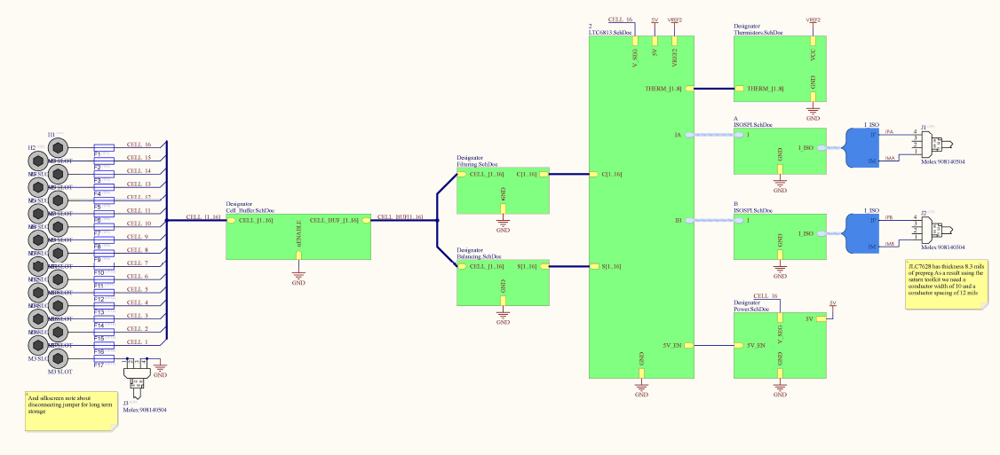
Block Diagram of the Module each square represents one of the following schematics:
- LTC6813
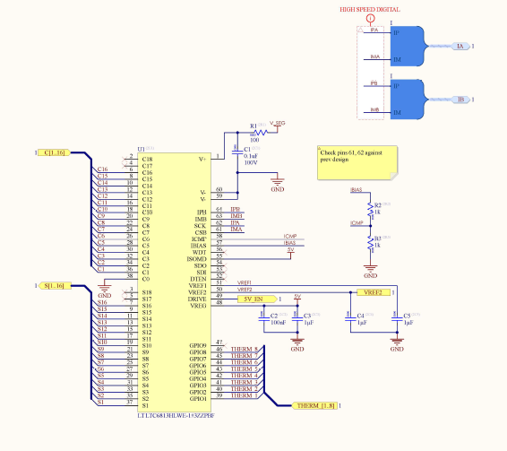
{kind=link}
- Power
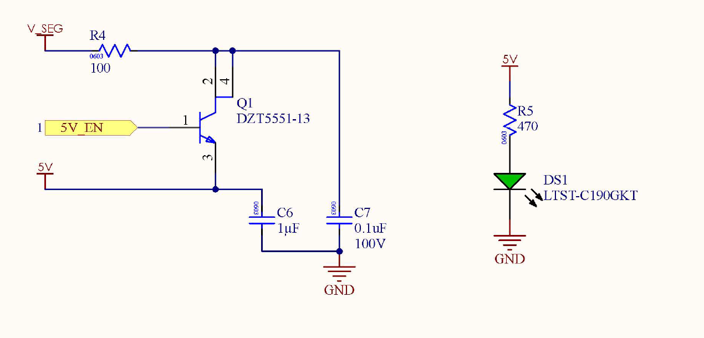
{kind=link}
- Balancing
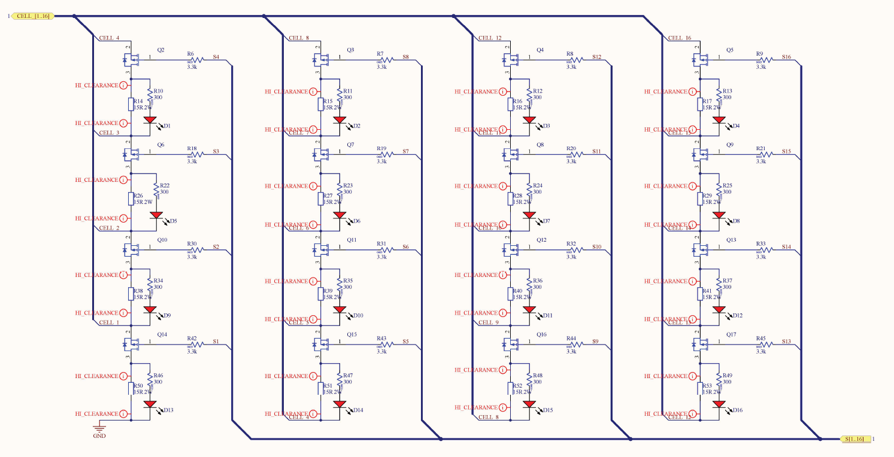
{kind=link}
- Thermistors
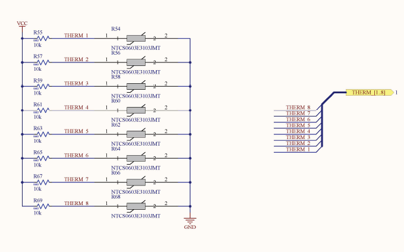
{kind=link}
- ISOSPI
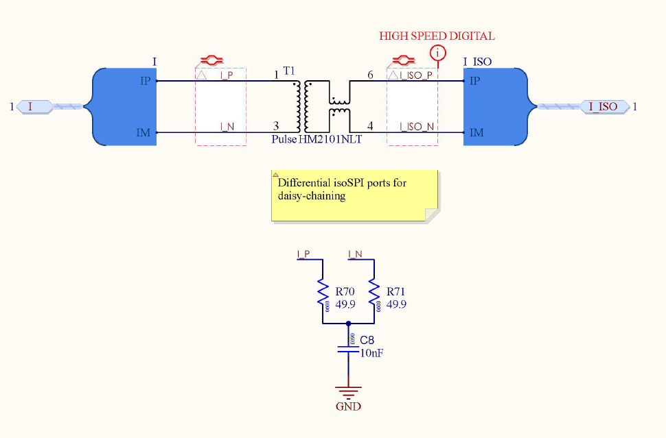
{kind=link}
- Filtering
{kind=link}
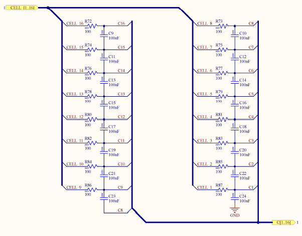
- Cell Buffer
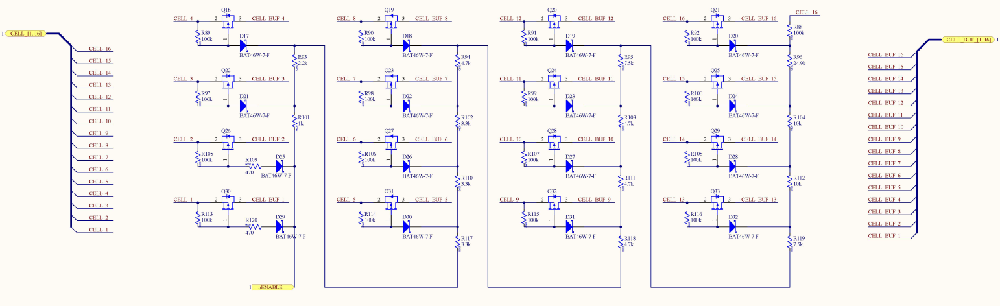
{kind=link}
Other Schematics Designed
- Pump Control Schematic
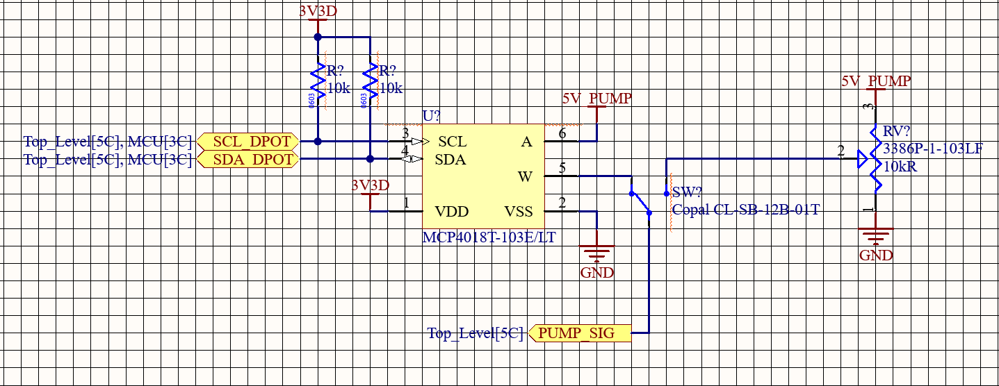
This circuit is used to control the coolant pump using either a digital or physical potentiometer
{kind=link}
- GPS Schematic
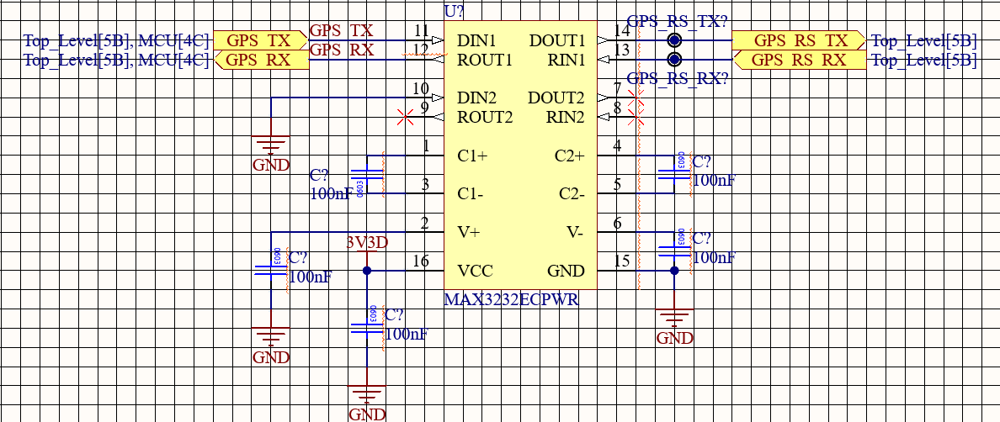
This circuit is used to calculate the instantaneous speed of the car, which is achieved by calculating the Doppler shift in the signal received from the satellite due to the car's speed.
{kind=link}
- IMU Schematic
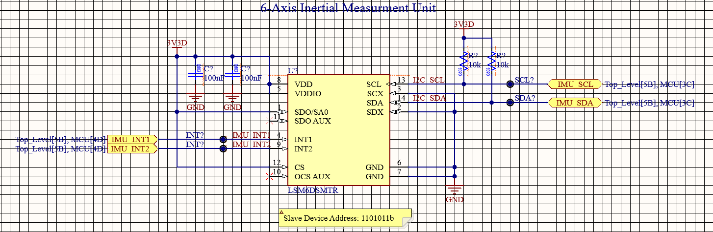
This circuit is used to measure acceleration and angular rate
{kind=link}